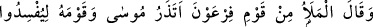
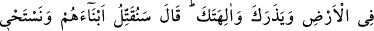
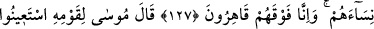
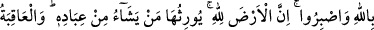
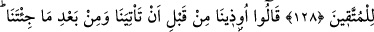
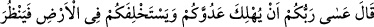
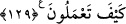

FİRAVUN’UN YAPTIĞI
HAKSIZLIKLAR
127. Firavun’un kavminden ileri gelenler dediler ki: Musa’yı ve kavmini, seni ve
tanrılarını bırakıp yeryüzünde bozgunculuk çıkarsınlar diye mi bırakacaksınız?
(Firavun): “Biz onların oğullarını öldürüp, kadınlarını sağ bırakacağız. Elbette biz
onları ezecek üstünlükteyiz” dedi.
128. Musa kavmine dedi ki: “Allah’tan yardım isteyin ve sabredin. Şüphesiz ki
yeryüzü Allah’ındır. Kullarından dilediğini ona vâris kılar. Sonuç (Allah’tan korkup
günahtan) sakınanlarındır.”
129. Onlar da, sen bize (peygamber olarak) gelmeden önce de geldikten sonra da
bize işkence edildi, dediler. (Musa), “Umulur ki Rabbiniz düşmanınızı helâk eder ve
onların yerine sizi yeryüzüne hakim kılar da nasıl hareket edeceğinize bakar” dedi.
“Firavun’un kavminden ileri gelenler dediler ki:” Rivayete göre Firavun, Mûsâ
(a.s.)’ın asâ ve beyaz el mucizelerini gördükten sonra ondan son derece korktu. Bu
yüzden Mûsâ (a.s.)’a hiç bir cevap vermedi ve ona bir kötülük yapmaya teşebbüs
etmedi. Bilakis serbest bıraktı. Bunun için kavminin ileri gelenleri ona: “Mûsâ’yı ve
kavmini,” Mısır diyarında bulunan insanların dinlerini ifsad etsinler, onları sana tâbi
olmaktan vazgeçirsinler ve “seni ve tanrılarını terk edip yeryüzünde bozgunculuk
yapsınlar diye mi bırakıyorsun?”
Firavun’ın yıldızlara taptığı söylenmiştir. Farsça tefsirde de belirtildiği üzere doğru
olanı şudur: O, kavmi için kendi sûretinde putlar yaptırdı ve kendisine yaklaşmak için
bu putlara tapmalarını emretti. İşte bu sebeple o: “Ben sizin en yüce rabbinizim.” (en-
Nâziât, 79/24) demiştir.
Firavun onlara cevap olarak: “Biz, onların oğullarını öldüreceğiz, kadınlarını”
çeşitli işlerde kullanmak üzere “sağ bırakacağız.” yani, daha önce Mûsâ’nın doğduğu